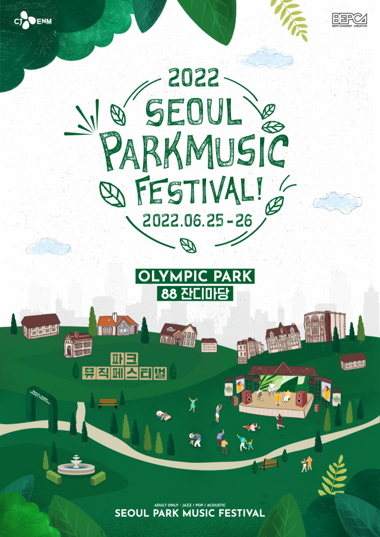
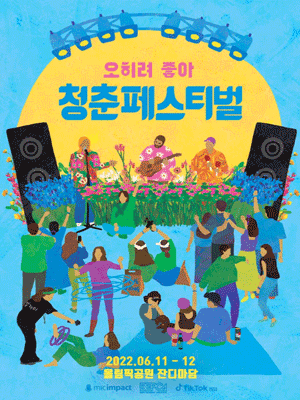

together
party
파크뮤직페스티벌
2022.06.22-25
2018년 첫 개최된 파크 뮤직 페스티벌은 페스티벌을 즐기기 좋은 도심 속 푸른 공원에서 누구나 쉽게 즐길 수 있는 음악 공연과 아티스트,
먹을거리 놀거리가 가득한 음악 축제로 매년 관람객의 마음을 사로잡았다.
청춘페스티벌:오히려좋아
2022.06.11-12
우리는 세상에 긍정적임팩트를 전달하고 싶습니다.
청춘은 함게 할 때 더욱 빛나고 푸릅니다.
청춘페스티벌은 세상을 변화시키는 축제를 지향합니다.
오히려 좋아 가보자고. 좋다고 생각하니, 정말 좋아진다. 위로의 에세이보다 자기계발서보다 더 강력한 마법의 주문.
꽃길이 아니면 어때? 오히려 좋아, 가보자고!
워터밤페스티벌 2022.06.22-24
그리웠다 워터밤! 잃어버린 우리의 젊음!
2022.06.22-24
그리웠다 워터밤! 잃어버린 우리의 젊음!
2022년 워터밤의 도전이 드디어 시작되었습니다! 여름 최고의 순간으로 빠져들게 했던 강력한 썸머 페스티벌 워터밤! 2022년 우리의 여름은 결국 워터밤입니다! 강력한 아티스트들 출연 확정. 뜨겁고 열정적인 퍼포먼스를 직접 현장에서 느껴보세요.
2022.06.22-24
그리웠다 워터밤! 잃어버린 우리의 젊음!2022년 워터밤의 도전이 드디어 시작되었습니다! 여름 최고의 순간으로 빠져들게 했던 강력한 썸머 페스티벌 워터밤! 2022년 우리의 여름은 결국 워터밤입니다! 강력한 아티스트들 출연 확정. 뜨겁고 열정적인 퍼포먼스를 직접 현장에서 느껴보세요.